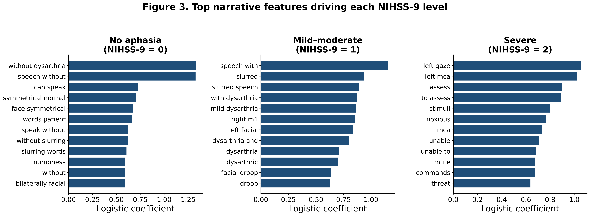

We submitted two abstracts to the Society for the Neurobiology of Language (SNL) 2026 meeting this week. Both came out of the same idea: the relationship between brain damage and language deficit can be run in reverse.
SLM: predicting lesion location from behavior alone
For more than 160 years — since Broca and Wernicke — lesion-symptom mapping has gone in one direction: damage in, deficit out. The inverse direction (symptom-lesion mapping, SLM) has been a theoretical aspiration since at least the 1990s, but never an operational tool. Two reasons: stroke follows vascular territories rather than cytoarchitectonic boundaries (so any single ROI has too few damaged patients), and continuous per-region inverse prediction had simply never been demonstrated to work.
Using the C-STAR cohort (one of the largest and most deeply phenotyped chronic aphasia databases ever assembled), we trained a multi-task Elastic Net to predict per-ROI lesion load across 64 left-hemisphere ROIs from a 200-feature behavioral phenotype: WAB subscores, PNT and WAB sentence-repetition error proportions across six categories, NIHSS items, WAIS, BNT, apraxia battery, discourse measures, demographics. 296 patients, leave-one-out cross-validation.
The results held up: 40 of 64 ROIs had R² > 0.1, 27 exceeded 0.2, and 16 exceeded 0.3. The dorsal language stream led the pack — superior longitudinal fasciculus (R² = 0.47, AUC = 0.89), precentral gyrus, posterior insula, retrolenticular internal capsule, posterior STG. Predictable ROIs clustered in classical perisylvian language cortex. Visual, limbic, and memory regions stayed at chance — an implicit negative control showing the model isn't just tracking total lesion volume.
The Elastic Net coefficients showed a clean anterior/posterior split: anterior ROIs loaded on WAB fluency and a Broca composite; posterior ROIs loaded on comprehension, repetition, and Wernicke/Anomic composites. Total LH lesion volume was predicted at r = 0.72.
The clinical kicker: for a patient sitting in a rural clinic, in an acute stroke bay, or anywhere an MRI scanner is hours or weeks away, this means a trained clinician with a behavioral battery can now reason quantitatively about where the damage sits — and where to aim stimulation.
Reading stroke severity out of doctor's notes

The second abstract took a different angle: instead of using structured behavioral testing to predict anatomy, can we recover language severity from unstructured clinical text? Most retrospective EHR cohorts lack coded NIHSS items, but the admission notes that produced those scores still contain the narrative description.
As part of the Stroke Outcome Optimization Project (SOOP), we assembled 1,227 admission notes from 1,173 acute-stroke patients, each carrying an expert-coded NIHSS-9 (best language) score. We trained one L2-regularized logistic regression per severity level on TF-IDF unigram and bigram features, with patient-grouped 5-fold CV.
Patient-grouped ROC-AUC was 0.80 for no aphasia, 0.74 for mild-to-moderate, 0.86 for severe. The features driving each class were clinically coherent (figure on left): "without dysarthria," "speech without," "symmetrical normal" pulled toward no aphasia. "Slurred speech," "dysarthria," "facial droop" pulled toward mild-moderate. "Left MCA," "noxious," "mute," "unable to assess," "not following" pulled toward severe.
The model wasn't keying on surface artifacts — it was reading the actual phenomenology. That means we can extract aphasia phenotypes from EHR text at cohort scale, opening up retrospective analyses (longitudinal recovery, lesion-symptom mapping in much larger cohorts) that were previously locked behind missing structured data.
Two abstracts, one underlying idea: the relationship between brain and behavior can be run in either direction, and the direction we were missing turns out to be the more clinically useful one.